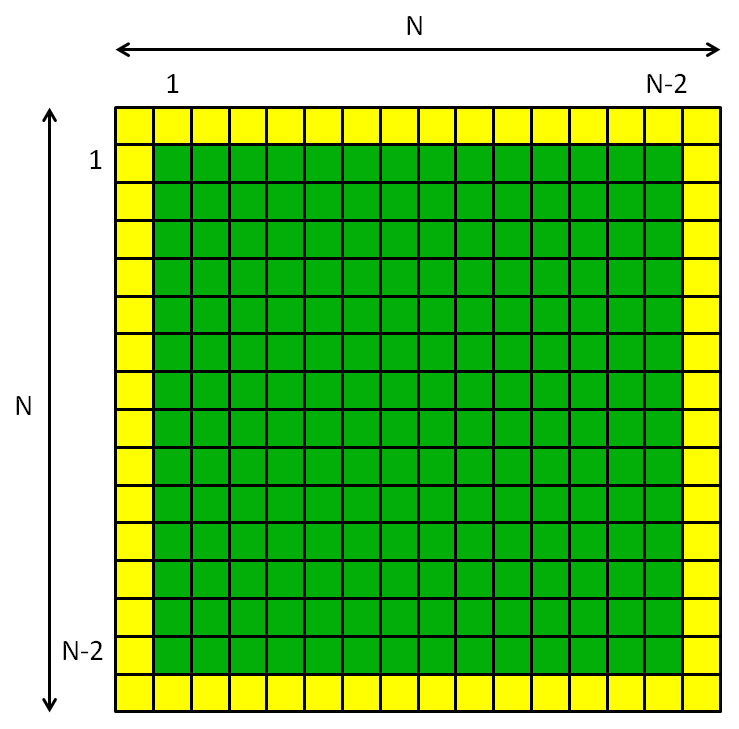

We are approaching the end of our brief introduction to parallel programming on shared memory systems - in our case the multicore processors on a desktop or laptop PC. In this lab we will see how to use barrier synchronization across threads in Java. I also introduce one new example - a problem from science and engineering called Laplace's Equation. As an extra topic, there is brief foray into OpenMP.
A Parallel Game of Life
Read over last week's lecture about race conditions and barrier sychronization in parallel programs. Here is a fully synchronized (and correct!) parallel version of Conway's Game of Life:
import java.awt.* ;
import javax.swing.* ;
import java.util.concurrent.CyclicBarrier ;
public class ParallelLife extends Thread {
final static int N = 256 ;
final static int P = 256 ; // Number of threads
final static int CELL_SIZE = 4 ;
final static int DELAY = 0 ;
static int [][] state = new int [N][N] ;
static int [][] sums = new int [N][N] ;
static Display display = new Display() ;
static CyclicBarrier barrier = new CyclicBarrier(P) ;
public static void main(String args []) throws Exception {
// Define initial state of Life board
for(int i = 0 ; i < N ; i++) {
for(int j = 0 ; j < N ; j++) {
state [i] [j] = Math.random() > 0.5 ? 1 : 0 ;
}
}
display.repaint() ;
pause() ;
ParallelLife [] threads = new ParallelLife [P] ;
for(int me = 0 ; me < P ; me++) {
threads [me] = new ParallelLife(me) ;
threads [me].start() ;
}
for(int me = 0 ; me < P ; me++) {
threads [me].join() ;
}
}
int me ;
ParallelLife(int me) {
this.me = me ;
}
final static int B = N / P ; // block size
public void run() {
int begin = me * B ;
int end = begin + B ;
// Main update loop.
int iter = 0 ;
while(true) {
if(me == 0)
System.out.println("iter = " + iter++) ;
// Calculate neighbour sums.
for(int i = begin ; i < end ; i++) {
for(int j = 0 ; j < N ; j++) {
// find neighbours...
int ip = (i + 1) % N ;
int im = (i - 1 + N) % N ;
int jp = (j + 1) % N ;
int jm = (j - 1 + N) % N ;
sums [i] [j] =
state [im] [jm] + state [im] [ j] + state [im] [jp] +
state [ i] [jm] + state [ i] [jp] +
state [ip] [jm] + state [ip] [ j] + state [ip] [jp] ;
}
}
synch() ;
// Update state of board values.
for(int i = begin ; i < end ; i++) {
for(int j = 0 ; j < N ; j++) {
switch (sums [i] [j]) {
case 2 : break;
case 3 : state [i] [j] = 1; break;
default: state [i] [j] = 0; break;
}
}
}
synch() ;
if(me == 0)
display.repaint() ;
pause() ;
}
}
static class Display extends JPanel {
final static int WINDOW_SIZE = N * CELL_SIZE ;
Display() {
JFrame frame = new JFrame("Life");
frame.setSize(WINDOW_SIZE, WINDOW_SIZE);
frame.setDefaultCloseOperation(JFrame.EXIT_ON_CLOSE);
frame.setContentPane(this);
frame.setVisible(true);
}
public void paintComponent(Graphics g) {
g.setColor(Color.BLACK) ;
g.fillRect(0, 0, WINDOW_SIZE, WINDOW_SIZE) ;
g.setColor(Color.WHITE) ;
for(int i = 0 ; i < N ; i++) {
for(int j = 0 ; j < N ; j++) {
if(state [i] [j] == 1) {
g.fillRect(CELL_SIZE * i, CELL_SIZE * j,
CELL_SIZE, CELL_SIZE) ;
}
}
}
}
}
static void synch() {
try {
barrier.await() ;
}
catch(Exception e) {
e.printStackTrace() ;
System.exit(1) ;
}
}
static void pause() {
try {
Thread.sleep(DELAY) ;
}
catch(InterruptedException e) {
e.printStackTrace() ;
System.exit(1) ;
}
}
}
If you followed the advice in last week's lab script you may have come
up with something similar - though at that stage probably would not have
put in the important barriers.
For barrier synchronization we are using the standard Java class:
java.util.concurrent.CyclicBarrierNote the constructor of this takes the number of threads that are to be synchronized as an argument. It is convenient here to wrap the call to await() in our own method synch(), just to get the annoying code for exception handling out of the main logic.
Each thread can call await() on a single barrier many times - this is the sense in which it is "cyclic". But, each time it is called, all P threads must make the call (this is sometimes called a collective call.)
Run this program and check the behaviour looks plausibly correct. Notice we are running a relatively small Life board in a rather large number of threads (much larger than the available number of cores). The idea here is just to push the envelope with the level of concurrency in the program, to get some confidence that a parallel program with synchronization really does always get results correct.
If you didn't do something similar last week, comment out the two calls to synch, and run the program again. Is it working correctly? What if you only comment out one of the two calls - are they both essential?
Solving the Laplace Equation
We will leave benchmarking the parallel Game of Life as an exercise. Before attempting that, study the new example below.
First, a mathematical aside. You may or may not find this helpful - in the end we are just interested in parallelizing a given sequential algorithm...
The two dimensional Laplace equation is an equation that crops up in several places in physics and mathematics. We don't need to worry much about what those places are - it is introduced here just as an example of a relatively simple numerical problem in science and engineering that can be tackled by parallel programming.
We are interested in the Laplace equation on a two-dimensional grid of points. In this incarnation, if we store the unknown variables of the equation in the elements of an array called phi, then one way of writing the equations for these variables is:
phi [i] [j] =
0.25 * (phi [i] [j - 1] + phi [i] [j + 1] +
phi [i - 1] [j] + phi [i + 1] [j])
In other words, the element phi [i] [j] should be equal to the
average of its four immediately neighbouring elements. This
condition has to be satisfied everywhere in some region of
the (i, j) grid. (Often we are given fixed values
of phi around the borders of the region in question, and required
to find the values of phi inside the region.)
An iterative numerical approach to solving the equation is just to initially set all elements of phi that we have to solve for to some value like zero, then repeatedly change individual phi [i] [j] elements to be the average of their neighbours. If we repeat this local update sufficiently many times, the phi elements converge to the global solution of the equations. This is called the relaxation method.
That is the end of our mathematical aside. Now just try to run the sequential program below:
import java.awt.* ;
import javax.swing.* ;
public class Laplace {
final static int N = 256 ;
final static int CELL_SIZE = 2 ;
final static int NITER = 100000 ;
final static int OUTPUT_FREQ = 1 ;
static float [][] phi = new float [N][N] ;
static float [][] newPhi = new float [N][N] ;
static Display display = new Display() ;
public static void main(String args []) throws Exception {
// Make voltage non-zero on left and right edges
for(int j = 0 ; j < N ; j++) {
phi [0] [j] = 1.0F ;
phi [N-1] [j] = 1.0F ;
}
display.repaint() ;
// Main update loop.
long startTime = System.currentTimeMillis();
for(int iter = 0 ; iter < NITER ; iter++) {
// Calculate new phi
for(int i = 1 ; i < N - 1 ; i++) {
for(int j = 1 ; j < N - 1 ; j++) {
newPhi [i] [j] =
0.25F * (phi [i] [j - 1] + phi [i] [j + 1] +
phi [i - 1] [j] + phi [i + 1] [j]) ;
}
}
// Update all phi values
for(int i = 1 ; i < N - 1 ; i++) {
for(int j = 1 ; j < N - 1 ; j++) {
phi [i] [j] = newPhi [i] [j] ;
}
}
if(iter % OUTPUT_FREQ == 0) {
System.out.println("iter = " + iter) ;
display.repaint() ;
}
}
long endTime = System.currentTimeMillis();
System.out.println("Calculation completed in " +
(endTime - startTime) + " milliseconds");
display.repaint() ;
}
static class Display extends JPanel {
final static int WINDOW_SIZE = N * CELL_SIZE ;
Display() {
setPreferredSize(new Dimension(WINDOW_SIZE, WINDOW_SIZE)) ;
JFrame frame = new JFrame("Laplace");
frame.setDefaultCloseOperation(JFrame.EXIT_ON_CLOSE);
frame.setContentPane(this);
frame.pack();
frame.setVisible(true);
}
public void paintComponent(Graphics g) {
for(int i = 0 ; i < N ; i++) {
for(int j = 0 ; j < N ; j++) {
float f = phi [i] [j] ;
Color c = new Color(f, 0.0F, 1.0F - f) ;
g.setColor(c) ;
g.fillRect(CELL_SIZE * i, CELL_SIZE * j,
CELL_SIZE, CELL_SIZE) ;
}
}
}
}
}
In this example, the region of the (i, j) plane where we are
calculating phi is given by the range of values
i = 1, ..., N-2 and j = 1, ..., N-2.
On the outer boundary of the square (i or j are 0 or N-1) phi stays fixed - equal to zero on the top and bottom edges and 1.0 on the left and right edges (boundary conditions).
Pictorially, the array is organized like this:

The yellow border represents array elements where the field phi is set to fixed boundary values. The central green area represents array elements that will be updated in the algorithm. The numbers at the side of the grid represent the ranges of the indexes used in the update loops.
An engineering way of thinking of this is that we have a hollow metal box with a fixed voltage of 0 on the top and bottom faces, and a fixed voltage of 1 on the left and right faces. Then the solution for the inner phi elements is the voltage field (or more correctly the electrical potential) in the space inside the box.
On the display a voltage of zero is represented by the colour blue and a voltage of 1.0 is represented by the colour red.
Initially only the extreme left and right edges are red. But as voltages are averaged with neighbours over many iterations the "redness" spreads over the square. Eventually we reached a converged state for the voltage field, with red and blue areas symmetric in the square. This is now an approximate solution of the Laplace equation
Don't get bogged down in the details. Look at the form of the code. The overall pattern is very similar to the Life simulation we ran earlier. There is an outer loop over iterations which is now itself a for loop, but that doesn't change parallelization of the inner loops.
Apart from the small matter of the actual calculation inside the inner loops that we want to parallelize, there is only one minor change to their structure - the ranges of i and j now go from 1 to N-2 rather than 0 to N-1.
When you come to parallelize this, I suggest you take this into account by code like something like this:
int begin = me * B ;
int end = begin + B ;
if(me == 0)
begin = 1 ;
if(me == P-1)
end = N - 1 ;
inside the run() methods of the threads - modifying the domains
in the leftmost and rightmost threads.
Exercises
-
Try to parallelize the Laplace following a pattern almost identical to the one used in ParallelLife above.
-
Benchmark the sequential and parallel version of the Laplace equation using various number of threads (e.g. 2, 4, 8). Calculate parallel speedups and efficiencies.
Before doing benchmarks, increase the value of the OUTPUT_FREQ constant to, say, 1000. This has the effect of making the output happen only every 1000 iterations.
Without this change it is likely that the overhead of the graphic output would dominate the time for the calculations, and it is the time for the calculations that are most important here.
Estimate the overheads of the barrier calls by simply commenting them out and running again. (This may lead to incorrect numerical results for the voltage field, but it allows you to estimate how much synchronization costs!)
-
If you have access to a suitable Linux system, benchmark a parallel Life program implemented using OpenMP, following the outline below.
Special Topic: Using OpenMP
[To run this example following exactly the instructions below, you will need access to a Linux system. However it should be possible to adapt to Windows if you have a compatible C/C++ IDE.]
At the end of the week 3 lecture we briefly discussed the OpenMP "API" for shared memory parallel programming. Try the example below. You will have to be prepared to edit a little C or C++, but the code here is sufficiently similar to Java that this shouldn't be too intimidating!
Under Linux, using a text editor such as gedit, create a file called life.cc containing the following C++ program:
#include <omp.h>
#include <stdio.h>
#include <stdlib.h>
#define N 32
#define NITER 100
int state [N] [N] ;
int sums [N] [N] ;
void printCells() ;
int main(int argc, char *args []) {
// Define initial state of Life board
for(int i = 0 ; i < N ; i++) {
for(int j = 0 ; j < N ; j++) {
state [i] [j] = random() > (RAND_MAX/2) ? 1 : 0 ;
}
}
// Main update loop.
for(int iter = 0 ; iter < NITER ; iter++) {
printf("iter = %d\n", iter++) ;
// Calculate neighbour sums.
#pragma omp parallel for
for(int i = 0 ; i < N ; i++) {
for(int j = 0 ; j < N ; j++) {
// find neighbours...
int ip = (i + 1) % N ;
int im = (i - 1 + N) % N ;
int jp = (j + 1) % N ;
int jm = (j - 1 + N) % N ;
sums [i] [j] =
state [im] [jm] + state [im] [ j] + state [im] [jp] +
state [ i] [jm] + state [ i] [jp] +
state [ip] [jm] + state [ip] [ j] + state [ip] [jp] ;
}
}
// Update state of board values.
#pragma omp parallel for
for(int i = 0 ; i < N ; i++) {
for(int j = 0 ; j < N ; j++) {
switch (sums [i] [j]) {
case 2 : break;
case 3 : state [i] [j] = 1; break;
default: state [i] [j] = 0; break;
}
}
}
printCells() ;
}
}
void printCells() {
for(int i = 0 ; i < N ; i++) {
for(int j = 0 ; j < N ; j++) {
if(state [i] [j])
printf(" o") ;
else
printf(" ") ;
}
printf("\n") ;
}
}
This is a fully parallelized OpenMP version of "Life". Apart from the
cruder output (I didn't want to get bogged down in C++ graphics) it should
look very much like the sequential Life code we saw last week.
The parallelization is encapsulated in just the omp pragmas in
front of the computational loops.
Open a terminal (Linux equivalent of Command Prompt) and compile and run this program by:
$ gcc -fopenmp life.cc $ ./a.out(Don't type the $ - that is just my representation of the command prompt!)
Increase N and NITER to something more realistic (e.g. 1024 and 1000), comment out the output call printCells(), and try some benchmarking. You may for example use the time command in Linux to time runs, e.g.:
$ time ./a.outThe time to record is the "real" time output by the time command.
To change the number of threads, issue a command such as:
$ export OMP_NUM_THREADS=2before running the program.
To make a sequential program for calculating parallel speedups, either comment out the two #pragma omp lines, or just set the OMP_NUM_THREADS environment variable to 1.